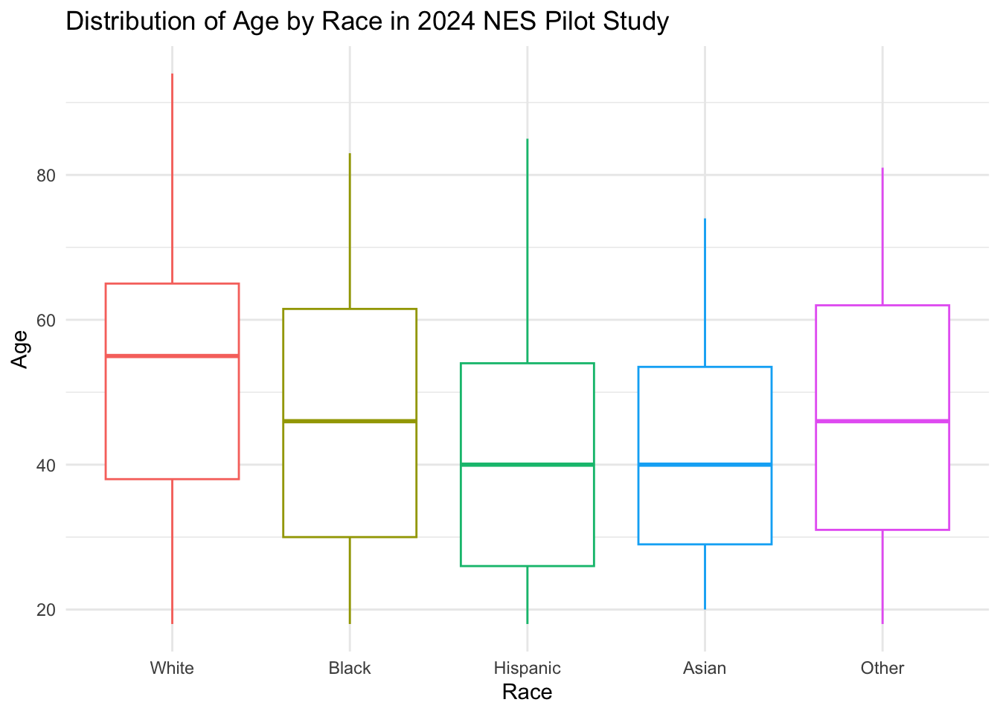

Lab 09 - Exploring data in the 2020 National Elections Study
Overview
In this lab, we continue our replication of Grumbach and Hill (2021) “Rock the Registration: Same Day Registration Increases Turnout of Young Voters.”
To accomplish this we will:
Load packages. (5 minutes)
Set working directory and load the data from last class. (5 minutes)
Do some additional recoding (5 minutes)
Describe variation in voting by state, year, policy, and age (20 minutes)
Estimate four regression models to understand fixed effects and cluster robust standard errors (20 minutes)
Replicate two regression models from Grumbach and Hill (2021) interacting
sdrwithage_group(10 minutes)Recreate a portion of Figure 3 showing the marginal effect of
sdrby age group. (15 minutes)
Finally, we’ll take the survey for this week
One of these 6 tasks will be randomly selected as the graded question for the lab.
You will work in your assigned groups. Only one member of each group needs to submit the html file of lab.
This lab must contain the names of the group members in attendance.
If you are attending remotely, you will submit your labs individually.
Here are your assigned groups for the semester.
Goals
This week’s lab will give you practice:
Loading data from your own computers (Q1)
Data wrangling with conditional logic (Q2)
Describing variation to help illustrate the motivation behind fixed effects regression (Q3)
Using
lm_robust()to easily estimate models with fixed effects and robust clustered standard errors (Q4)Estimating and interpreting interaction models (Q5-6) to test conditional claims (like does the effect of Same Day Registration vary across age cohorts)
Workflow
Please render this .qmd file
As with every lab, you should:
- Download the file
- Save it in your course folder
- Update the
author:section of the YAML header to include the names of your group members in attendance. - Render the document
- Open the html file in your browser (Easier to read)
- Write your code in the chunks provided under each section
- Comment out or delete any test code you do not need
- Render the document again after completing a section or chunk (Error checking)
- Upload the final lab to Canvas.
Get set up to work
Load packages
1 Set up your Environment
In the code chunk below:
- Please add code to load the package
DeclareDesign
# Libraries
library(tidyverse)
library(haven)
library(labelled)
library(kableExtra)In R studio set your working directory to the folder where this lab is saved.
- Session > Set Working Directory > Source File Location
After doing so uncomment getwd() Should print out something like
“~/Desktop/pols1600/labs/”
Depending on where your lab is saved
# In the Top Panel of RStudio Click
# Session > Set Working Directory > Source File Location
# Uncomment to Check Where Your File is Saved
# getwd()
Note
If getwd() says something like ‘~/Downloads/’ click: “File > Save As” and save this lab in your course folder. Then close the version 09-lab.qmd that was openned from your Downloads folder and open the version of 09-lab.qmd that now exists in your course folder.
2 Download the Data
Please click here to go to the download page for the National Election Studies 2024 Pilot Study
3 Load the Data
df <- read_dta("../files/data/anes_pilot_2024_20240319.dta")4 Explore the Codebook
4.1 Identify one outcome interest
4.2 Indentify one key predictor
5 Get a high level overview of the data
5.1 Examine the distributions and values of your outcome variable
# Vote Choice
get_variable_labels(df$vchoice_rematch)[1] "Vote Trump or Biden in 2024"get_value_labels(df$vchoice_rematch) No Answer inapplicable, legitimate skip
-7 -1
Donald Trump Joe Biden
1 2
8 9 table(df$vchoice_rematch,useNA = "ifany")
-7 -1 1 2
23 151 869 866 # Acts of Participation
# All variables start with mobil_ prefix
df %>% select(starts_with("mobil")) %>% names() [1] "mobil_talk" "mobil_online" "mobil_rally"
[4] "mobil_button" "mobil_work" "mobil_talk_skp"
[7] "mobil_online_skp" "mobil_rally_skp" "mobil_button_skp"
[10] "mobil_work_skp" "mobil_talk_pg_timing" "mobil_online_pg_timing"
[13] "mobil_rally_pg_timing" "mobil_button_pg_timing" "mobil_work_pg_timing" # Look at Political Talk
get_variable_labels(df$mobil_talk)[1] "2020 campaign - Talk to others about candidates"get_value_labels(df$mobil_talk) No Answer inapplicable, legitimate skip
-7 -1
Yes No
1 2
8 9 table(df$mobil_talk,useNA = "ifany")
-7 -1 1 2
1 150 704 1054 # Save the names all variables related to acts of participation in 2020
the_participation_vars <- df %>% select(starts_with("mobil")) %>% names()
# Only keep the variables that measure participation and not survey timing
the_participation_vars <- the_participation_vars[1:5]Outcomes
- Recode
vchoice_rematchtodv_vote_trump2024- equals 1 if
vchoice_rematch == 1 - equals 0 if
vchoice_rematch == 2 - equals
NAifvchoice_rematch < 0
- equals 1 if
- Recode
mobil_*variables topolpart_*that:- equals 1 if
mobil_* == 1 - equals 0 if
mobil_* == 2 - equals
NAifmobil_*< 0`
- equals 1 if
- Create
dv_participation*that is sum of respondents’ five responses topolpart_*variables
5.2 Write down any recoding for your outcome variable
- Recode
YOUR OUTCOME VARIABLE HEREtoNAME FOR RECODED VARIABLE- Describe the recodes you will do
5.3 Examine the distributions and values of your predictor variable
# Age
get_variable_labels(df$age)[1] "Profile variable: Age"get_value_labels(df$age)not asked
-9 summary(df$age) Min. 1st Qu. Median Mean 3rd Qu. Max.
-9.00 33.00 51.00 48.43 63.00 94.00 # Education
get_variable_labels(df$educ)[1] "Profile variable: Education"get_value_labels(df$educ) No HS credential High school graduate Some college
1 2 3
2-year degree 4-year degree Post-grad
4 5 6 summary(df$educ) Min. 1st Qu. Median Mean 3rd Qu. Max.
1.000 2.000 3.000 3.514 5.000 6.000 # Income
get_variable_labels(df$faminc_new)[1] "Profile variable: Family income"get_value_labels(df$faminc_new) No Answer inapplicable, legitimate skip
-7 -1
Less than $10,000 $10,000 - $19,999
1 2
$20,000 - $29,999 $30,000 - $39,999
3 4
$40,000 - $49,999 $50,000 - $59,999
5 6
$60,000 - $69,999 $70,000 - $79,999
7 8
$80,000 - $99,999 $100,000 - $119,999
9 10
$120,000 - $149,999 $150,000 - $199,999
11 12
$200,000 - $249,999 $250,000 - $349,999
13 14
$350,000 - $499,999 $500,000 or more
15 16
Prefer not to say
97 998
999 summary(df$faminc_new) Min. 1st Qu. Median Mean 3rd Qu. Max.
-7.00 3.00 7.00 14.89 10.00 97.00 table(df$faminc_new)
-7 1 2 3 4 5 6 7 8 9 10 11 12 13 14 15 16 97
38 119 126 222 142 141 140 122 149 144 120 109 88 31 20 10 4 184 # Race
get_variable_labels(df$race)[1] "Race"get_value_labels(df$race) No Answer inapplicable, legitimate skip
-7 -1
White Black
1 2
Hispanic Asian
3 4
Native American Two or more races
5 6
Other Middle Eastern
7 8
98 99 summary(df$race) Min. 1st Qu. Median Mean 3rd Qu. Max.
1.000 1.000 1.000 1.751 2.000 8.000 table(df$race,useNA = "ifany")
1 2 3 4 5 6 7 8
1270 242 239 44 17 69 27 1 # Partisanship
get_variable_labels(df$pid7)[1] "Profile variable: 7 point party identification"get_value_labels(df$pid7) Strong Democrat Not very strong Democrat
1 2
Lean Democrat Independent
3 4
Lean Republican Not very strong Republican
5 6
Strong Republican Not sure
7 8
Don't know
9 summary(df$pid7) Min. 1st Qu. Median Mean 3rd Qu. Max. NA's
1.000 2.000 4.000 4.023 6.000 8.000 58 table(df$pid7)
1 2 3 4 5 6 7 8
389 228 173 295 172 184 342 68 Predictors
agetoage- recode
-9s toNA
- recode
educ- create indicator
has_college_degreewhich equals1iseduc > 4and0otherwise
- create indicator
faminc_newtoincome- recode
-7and97toNA
- recode
racetorace_5catrace == 1 ~ "White"race == 2 ~ "Black"race == 3 ~ "Hispanic"race == 4 ~ "Asian"T ~ "Other"(Collapse other racial categories)
racetois_*binary indicators:is_white == 1if “race==1”,0otherwise
pid7topartyid- recode
pid7 == 8to4(ClassifyDon't Knowsas Independents)
- recode
pid7tois_*: binary indicators:is_dem == 1ifpartyid < 4, 0 otherwiseis_rep == 1ifpartyid > 4, 0 otherwiseis_ind == 1ifpartyid == 4, 0 otherwise
5.4 Write down any recoding for your outcome variable
- Recode
YOUR PREDICTOR VARIABLE HEREtoNAME FOR RECODED VARIABLE- Describe the recodes you will do
6 Recode the data
6.1 Recode the outcome variables
df %>%
# Recode 2024 Vote Choice
mutate(
dv_vote_trump2024 = case_when(
vchoice_rematch == 1 ~ 1,
vchoice_rematch == 2 ~ 0,
T ~ NA
)
) %>%
# Recode Individual Acts of Participation
mutate(across(all_of(the_participation_vars),
\(x) case_when(
x == 1 ~ 1,
x == 2 ~ 0,
T ~ NA
),
.names = "polpart_{.col}"
)
) %>%
# Create Additive Measure of Participation
mutate(
dv_participation = rowSums(
select(.,starts_with("polpart")),
na.rm = T)
) %>%
# ---- YOUR TURN: Recode your chosen Outcome ----
mutate(
) -> df6.2 Check your recoding of your outcome
# Check recodes
table(recode=df$dv_vote_trump2024,
original=df$vchoice_rematch,
useNA = "ifany") original
recode -7 -1 1 2
0 0 0 0 866
1 0 0 869 0
<NA> 23 151 0 0table(recode=df$polpart_mobil_button,
original=df$mobil_button,
useNA = "ifany") original
recode -1 1 2
0 0 0 1386
1 0 373 0
<NA> 150 0 0table(total=df$dv_participation,
item=df$polpart_mobil_button,
useNA = "ifany") item
total 0 1 <NA>
0 884 0 149
1 364 62 1
2 89 109 0
3 38 71 0
4 11 83 0
5 0 48 06.3 Recode your predictor variables
df %>%
mutate(
# Age
age = ifelse(age < 0, NA, age),
# Education
education = educ,
educ_f = to_factor(educ), #Convert to Factor for Plotting
is_college_grad = ifelse(educ > 4,1,0),
# Income
income = case_when(
faminc_new < 0 ~ NA,
faminc_new > 0 & faminc_new >16 ~ NA,
T ~ faminc_new
),
# Race
race_5cat = case_when(
race < 5 ~ to_factor(race),
T ~ "Other"
) %>% factor(., levels = c("White","Black","Hispanic","Asian","Other")),
is_white = ifelse(race == 1, 1, 0),
is_black = ifelse(race == 2, 1, 0),
is_hispanic = ifelse(race == 3, 1, 0),
is_asian = ifelse(race == 4, 1, 0),
is_other = ifelse(race == 5, 1, 0),
# Partisanship
partyid = case_when(
pid7 == 8 ~ 4,
T ~ pid7
),
is_dem = ifelse(partyid < 4, 1, 0),
is_rep = ifelse(partyid > 4, 1, 0),
is_ind = ifelse(partyid == 4, 1, 0),
) %>%
# ---- YOUR TURN: Recode your Predictor of Interest ----
mutate(
) -> df7 Describe the Data
7.1 Create a Table of Summary Statistics
the_vars <- c(
"dv_vote_trump2024", "dv_participation",
"age","education","income",
"is_white","is_black","is_hispanic","is_asian","is_other",
"partyid","is_dem","is_rep","is_ind"
)
the_labels <- c(
"Vote for Trump in '24",
"Acts of Participation in `20",
"Age","Education", "Income",
"White", "Black","Hispanic","Asian","Other",
"Party ID", "Democrat","Republican","Independent"
)
df_summary <- df %>%
select(all_of(the_vars)) %>%
rename_with(~the_labels) %>%
pivot_longer(
cols = everything(),
names_to = "Variable"
) %>%
mutate(
Variable = factor(Variable, levels = the_labels)
) %>%
group_by(Variable) %>%
summarise(
Min = min(value,na.rm = T),
p25 = quantile(value, prob = .25,na.rm = T),
Median = quantile(value, prob = .5,na.rm = T),
Mean = mean(value, na.rm = T),
p75 = quantile(value, prob = .75,na.rm = T),
Max = max(value,na.rm = T),
`N missing` = sum(is.na(value))
)kable(df_summary,
digits = 2) %>%
kable_styling() %>%
pack_rows("Outcomes",1,2) %>%
pack_rows("Demographic Predictors",3,10) %>%
pack_rows("Political Predictors",11,14)| Variable | Min | p25 | Median | Mean | p75 | Max | N missing |
|---|---|---|---|---|---|---|---|
| Outcomes | |||||||
| Vote for Trump in '24 | 0 | 0 | 1 | 0.50 | 1.00 | 1 | 174 |
| Acts of Participation in `20 | 0 | 0 | 0 | 0.93 | 1.00 | 5 | 0 |
| Demographic Predictors | |||||||
| Age | 18 | 33 | 51 | 49.37 | 63.75 | 94 | 31 |
| Education | 1 | 2 | 3 | 3.51 | 5.00 | 6 | 0 |
| Income | 1 | 3 | 6 | 6.43 | 9.00 | 16 | 222 |
| White | 0 | 0 | 1 | 0.67 | 1.00 | 1 | 0 |
| Black | 0 | 0 | 0 | 0.13 | 0.00 | 1 | 0 |
| Hispanic | 0 | 0 | 0 | 0.13 | 0.00 | 1 | 0 |
| Asian | 0 | 0 | 0 | 0.02 | 0.00 | 1 | 0 |
| Other | 0 | 0 | 0 | 0.01 | 0.00 | 1 | 0 |
| Political Predictors | |||||||
| Party ID | 1 | 2 | 4 | 3.88 | 6.00 | 7 | 58 |
| Democrat | 0 | 0 | 0 | 0.43 | 1.00 | 1 | 58 |
| Republican | 0 | 0 | 0 | 0.38 | 1.00 | 1 | 58 |
| Independent | 0 | 0 | 0 | 0.20 | 0.00 | 1 | 58 |
7.2 Modify the table to include your predictors
7.3 Visualize the Data
df %>%
ggplot(aes(race_5cat,age,
col = race_5cat))+
geom_boxplot()+
labs(
x = "Race",
y = "Age",
title = "Distribution of Age by Race in 2024 NES Pilot Study"
)+
guides(col="none")+
theme_minimal()